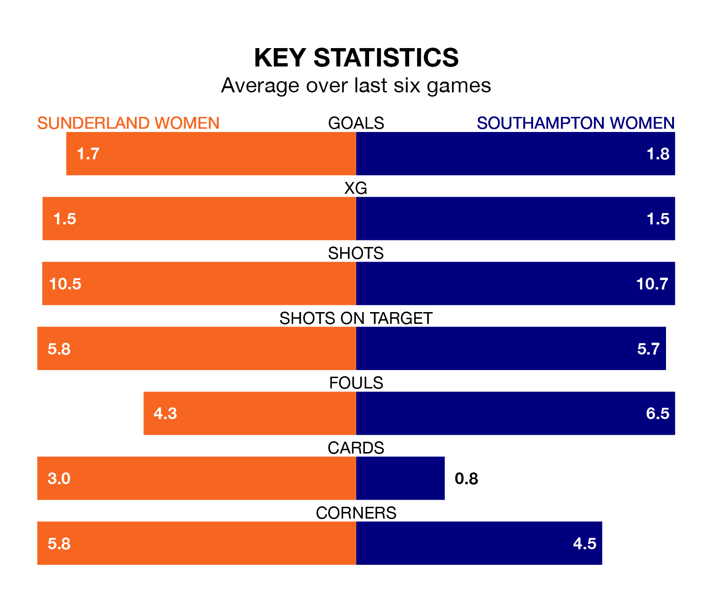

Two of the FA Women's Championship's top sides face each other at the Eppleton Colliery Football Ground in Sunday's early kick-off, when table-topping Sunderland Women host third-placed Southampton Women.
Sunderland have picked up nine wins and four draws from 16 games so far this season, and sit one point above the visitors going into the 2pm match.
The Saints, meanwhile, have won 10, picking up 30 points.
With 28 goals in 16 games so far this season, Southampton are the league's second-highest scorers with 1.8 goals per game. And they are conceding fewer than average, letting in 18 goals at a rate of 1.1 per game.
Sunderland, meanwhile, are average scorers, with 1.4 goals per game. They have conceded 0.8 goals per game.
In Claudia Moan, the hosts can rely on one of the league's safest pair of hands. She has kept seven clean sheets in her 16 appearances this season, and no 'keeper has prevented the opposition scoring more often in the FA Women's Championship.
In the Saints' net, Kayla Rendell has three clean sheets in 14 games. She has conceded a goal every 90 minutes, 50% more often than the 131 minutes between goals for Moan.
In the last five years, Sunderland and Southampton have played each other on four occasions. Sunderland won one of them and Southampton the other.
On average, Sunderland scored 0.2 goals and the Saints 1.0 in those matches.
Their last meeting was on January 14, when Southampton won 2-0 away.
Sunderland are in mixed form in the FA Women's Championship, with three wins and a draw from their last six games.
With four wins and two losses over that period, the away team's form is slightly better – they have taken 12 points from 18, compared to Sunderland's 10.
Sunderland's last match was on February 18, a 4-3 win against Lewes Women, with Jenna Dear (two), Brianna Westrup and Emily Scarr getting the goals for Sunderland.
Southampton beat Birmingham City Women 2-1 last time out, also on February 18, with Katie Wilkinson and Molly Pike on the scoresheet.
Updated: 10:08 (UTC), 23/02/24